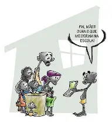
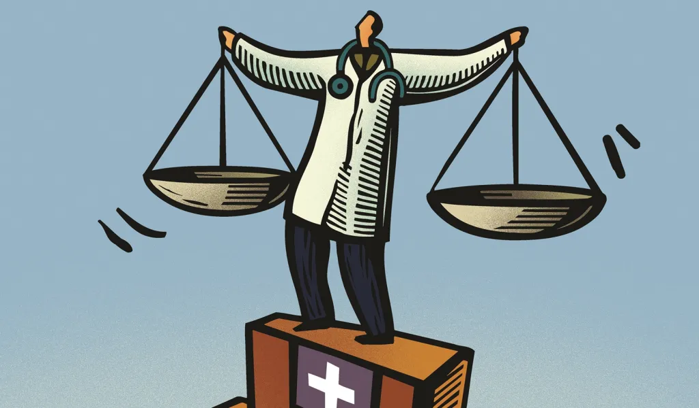

1. Desigualdade Econômica: Refere-se à disparidade na distribuição de renda e riqueza entre diferentes grupos sociais. Isso pode resultar em diferenças significativas no padrão de vida, acesso a bens e serviços, e oportunidades econômicas.

2. Desigualdade de Gênero: Envolve a diferença de tratamento e oportunidades entre homens e mulheres. Isso pode se manifestar em salários desiguais, acesso limitado a educação e carreiras, e normas sociais que favorecem um gênero sobre o outro.

3. Desigualdade Racial e Étnica: Refere-se à discriminação e disparidades enfrentadas por grupos raciais e étnicos específicos. Isso pode incluir acesso desigual a empregos, educação, moradia e justiça.
4. Desigualdade Educacional: Diz respeito às diferenças no acesso e qualidade da educação entre diferentes grupos sociais. Isso pode afetar as oportunidades futuras de emprego e mobilidade social.

5. Desigualdade de Saúde: Refere-se às disparidades no acesso a serviços de saúde e na qualidade dos cuidados recebidos. Grupos desfavorecidos muitas vezes enfrentam maiores taxas de doenças e menor expectativa de vida.
>6. Desigualdade Geográfica: Envolve as diferenças no desenvolvimento econômico e social entre regiões urbanas e rurais, ou entre diferentes áreas dentro de um país. Isso pode afetar o acesso a serviços básicos, infraestrutura e oportunidades de emprego.

7. Desigualdade Social e Cultural: Refere-se às diferenças no status social e nas oportunidades baseadas em fatores culturais, como religião, idioma e tradições.

Esses tipos de desigualdade social muitas vezes se inter-relacionam, criando desafios complexos para a construção de sociedades mais justas e equitativas.
Fontes: https://brasil.un.org/pt-br/sdgs/10 https://www.todamateria.com.br/origem-da-desigualdade-social/ https://www.significados.com.br/desigualdade-social/